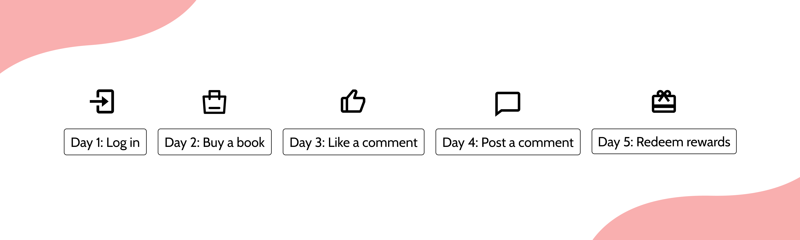

JDRead Reward Program
An in-app reward program to encourage more reading and more learning in China’s largest domestic e-commerce site.
Project duration: Apr. 2020 - Jul. 2020
Team: Me + Principle product manager (my supervisor) + cross-functional employees
My role: Preliminary research, Information hierarchy, Prototyping
Due to an NDA, I cannot disclose extensive visual and programmatical details about this project. But I am able to provide a verbal walkthrough and share some insights.
The Beginning
This is a project that I took on during my product management internship at JD.COM, One of China’s largest domestic e-commerce site and logistics network. Our product team discovered that the 2-day retention rate for the app indicates a lack of user stickiness and begs the question of whether our app is making a good first impression to e-book enthusiasts.
That’s where I came in. I designed a tool to incentivize the new users to engage in the reading app in the first few days that they visit.
Defining the Tool
Incentivization can take several forms, among which are a direct modification to existing services, a reward program, and seasonal activities. Modifying existing services demanded a high engineering cost and seasonal in-app promotion activites would put lots of pressure on our limited marketing and content specialists, so we opted for the reward program.
Making the Program
How many days should the reward program be and how should it be structured?
To answer this, I broke down the app’s main task flow to understand how we could guide a new user. It turned out that 5 was the magic number and we chose that as the number of days the program would last. Below are specific tasks that users would go through.
I then created a reward program where each day, a user would accomplish a specific task to get their reward for the day. Throughout the five days, the tasks get more involved and the reward grows until it peaks on the fifth day.